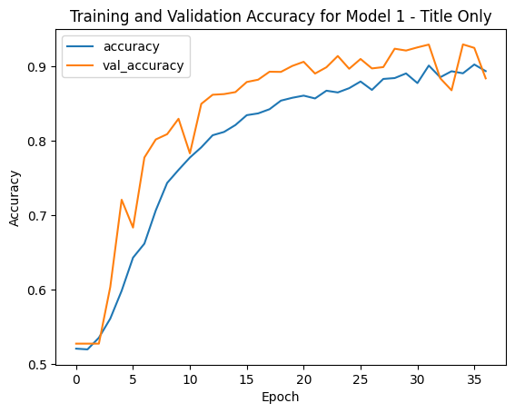
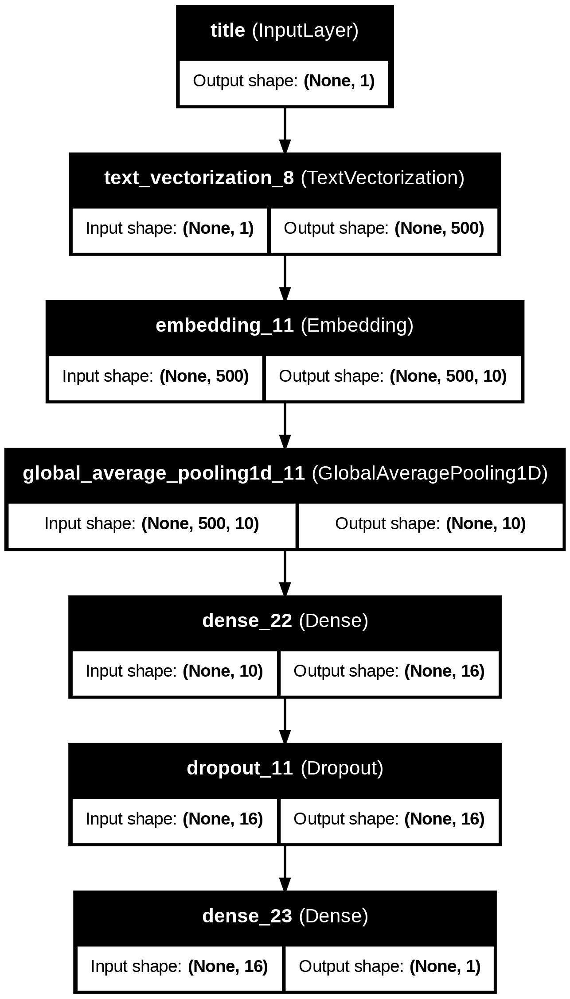
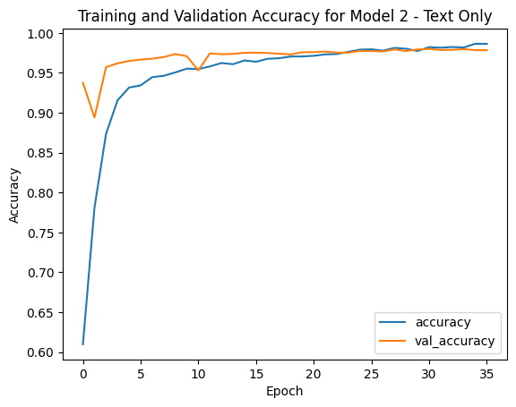
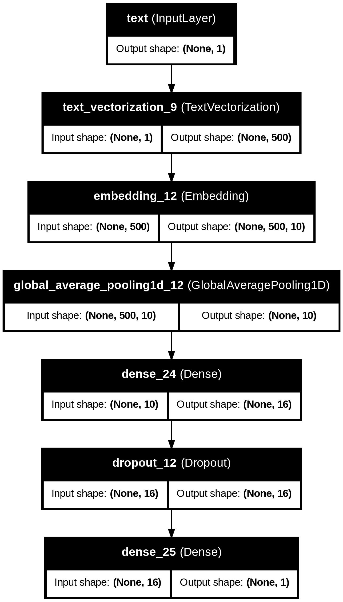
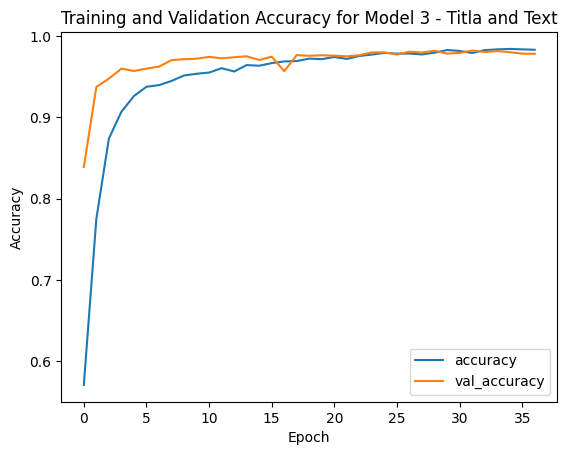
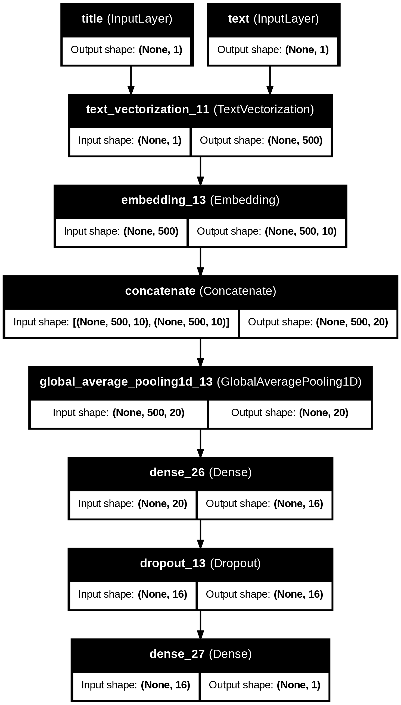
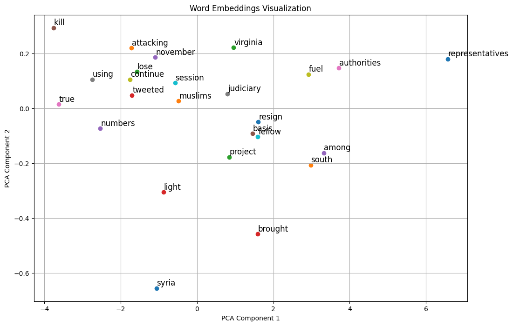

import os
os.environ["KERAS_BACKEND"] = "tensorflow"Hello! In today’s blog post, we’ll be building three different machine learning models using Keras to determine whether a news article is fake based on its title, full text, or a combination of both. We’ll compare these models to find out which approach works best for detecting fake news.
1. Acquire Training Data
First, we’ll make sure we’re using the TensorFlow backend and import the necessary libraries.
import numpy as np
import pandas as pd
import re
import string
import keras
from keras import layers, losses
from keras.layers import TextVectorization
from sklearn.model_selection import train_test_split
from sklearn.preprocessing import LabelEncoder
# for embedding viz
import plotly.express as px
import plotly.io as pio
pio.templates.default = "plotly_white"
from keras import models
import tensorflow as tfThen, we’ll load the training data from the provided URL into a pandas DataFrame using pd.read_csv.
train_url = "https://github.com/PhilChodrow/PIC16b/blob/master/datasets/fake_news_train.csv?raw=true"
df_train = pd.read_csv(train_url)Let’s inspect our dataframe:
print(df_train.shape)
df_train.head(5)(22449, 4)| Unnamed: 0 | title | text | fake | |
|---|---|---|---|---|
| 0 | 17366 | Merkel: Strong result for Austria's FPO 'big c... | German Chancellor Angela Merkel said on Monday... | 0 |
| 1 | 5634 | Trump says Pence will lead voter fraud panel | WEST PALM BEACH, Fla.President Donald Trump sa... | 0 |
| 2 | 17487 | JUST IN: SUSPECTED LEAKER and “Close Confidant... | On December 5, 2017, Circa s Sara Carter warne... | 1 |
| 3 | 12217 | Thyssenkrupp has offered help to Argentina ove... | Germany s Thyssenkrupp, has offered assistance... | 0 |
| 4 | 5535 | Trump say appeals court decision on travel ban... | President Donald Trump on Thursday called the ... | 0 |
2. Make a Dataset
To build effective machine learning models, it’s essential to preprocess the text data. We’ll define a function that cleans the text (removing stopwords, punctuation, and converting text to lowercase) in our dataframe and makes a tf.data.Datase. with two inputs, (title, text) and one output, the fake column.
from sklearn.model_selection import train_test_split
from nltk.corpus import stopwords
import nltk
nltk.download('stopwords')
stop_words = set(stopwords.words('english'))
def make_dataset(df):
def clean_text(text):
# Make the text Lowercase
text = text.lower()
# Remove punctuation
text = re.sub(f"[{string.punctuation}]", "", text)
# Remove stopwords
text = " ".join([word for word in text.split() if word not in stop_words])
return text
# Apply clean_text function to text and title columns
df.loc[:, "text"] = df["text"].apply(clean_text)
df.loc[:, "title"] = df["title"].apply(clean_text)
# Make a tf.data.Dataset
dataset = tf.data.Dataset.from_tensor_slices(((df["title"].values, df["text"].values), df["fake"].values))
# Batch the dataset
dataset = dataset.batch(100)
return dataset
# Create tf.data.Dataset
dataset = make_dataset(df_train)
[nltk_data] Downloading package stopwords to /root/nltk_data...
[nltk_data] Package stopwords is already up-to-date!Let’s use our function now to create training and testing data sets.
# Split into training and validation datasets
train_size = int(0.8 * len(df_train)) # 80% for training, 20% for testing
df_train_data = df_train[:train_size]
df_val_data = df_train[train_size:]
# Create tf.data.Dataset for training and validation
train_dataset = make_dataset(df_train_data)
val_dataset = make_dataset(df_val_data)In order to get a sense of our model’s relative performance, we need to establish a base rate. To do so, we’ll count the number of fake news articles and calculate their proportion.
base_rate = df_train["fake"].value_counts(normalize=True).max()
print(f"Base rate: {base_rate:.2f}")Base rate: 0.52So we need our model to get an accuracy of at least 52%.
Let’s also create a Text Vectorization Layer to be used in our first model. We create a TextVectorization layer to convert the text data into a numerical representation that can be fed into a model. This is important because machine learning algorithms work on numbers, not raw text.
#preparing a text vectorization layer for model (Title only)
size_vocabulary = 2000
def standardization(input_data):
lowercase = tf.strings.lower(input_data)
no_punctuation = tf.strings.regex_replace(lowercase,'[%s]' % re.escape(string.punctuation),'')
return no_punctuation
title_vectorize_layer = TextVectorization(
standardize=standardization,
max_tokens=size_vocabulary, # only consider this many words
output_mode='int',
output_sequence_length=500)
title_vectorize_layer.adapt(train_dataset.map(lambda x, y: x[0])) # only processes the titles3. Create Models
Model 1 - Titles Only
For our first model we’ll use only the article titles as an input.
Along with our Text Vectorization layer we need to make an embedding layer, which is used to convert words from the input text into a numerical format that the model can process.
from keras.layers import Embedding, Input, Dense, Dropout, GlobalAveragePooling1D
from keras.models import Model
from keras.utils import plot_model
# Create an embedding layer
embedding_dim = 10
embedding_layer = Embedding(input_dim=size_vocabulary, output_dim=embedding_dim)Now we can define our model using the text vectorization and embedding layers and some dense layers:
# Model 1
input_title = Input(shape=(1,), dtype=tf.string, name='title')
# Vectorize title
vectorized_title = title_vectorize_layer(input_title)
# Embed title
embedded_title = embedding_layer(vectorized_title)
flattened_title = GlobalAveragePooling1D()(embedded_title)
dense_output = Dense(16, activation='relu')(flattened_title)
dropout_layer = Dropout(0.5)(dense_output)
output = Dense(1, activation='sigmoid')(dropout_layer)
model1 = Model(inputs=input_title, outputs=output, name='model_title')
model1.compile(optimizer='adam', loss='binary_crossentropy', metrics=['accuracy'])To ‘fully train’ our model I’ll use EarlyStopping which ensures that the model stops when there is no improvement after a number of epochs, helping to prevent overfitting.
# Train Model 1
from keras.callbacks import EarlyStopping
early_stopping = EarlyStopping(monitor='val_loss', patience=5, restore_best_weights=True) # prevents overfitting by stopping if validation loss doesn't improve for 5 consecutive epochs
history1 = model1.fit(
train_dataset.map(lambda x, y: (x[0], y)),
validation_data=val_dataset.map(lambda x, y: (x[0], y)),
epochs=40,
callbacks=[early_stopping]
)Epoch 1/40
180/180 ━━━━━━━━━━━━━━━━━━━━ 4s 15ms/step - accuracy: 0.5186 - loss: 0.6930 - val_accuracy: 0.5272 - val_loss: 0.6923
Epoch 2/40
180/180 ━━━━━━━━━━━━━━━━━━━━ 5s 15ms/step - accuracy: 0.5124 - loss: 0.6927 - val_accuracy: 0.5272 - val_loss: 0.6908
Epoch 3/40
180/180 ━━━━━━━━━━━━━━━━━━━━ 3s 15ms/step - accuracy: 0.5259 - loss: 0.6907 - val_accuracy: 0.5272 - val_loss: 0.6869
Epoch 4/40
180/180 ━━━━━━━━━━━━━━━━━━━━ 2s 11ms/step - accuracy: 0.5478 - loss: 0.6876 - val_accuracy: 0.6033 - val_loss: 0.6808
Epoch 5/40
180/180 ━━━━━━━━━━━━━━━━━━━━ 2s 12ms/step - accuracy: 0.5806 - loss: 0.6772 - val_accuracy: 0.7207 - val_loss: 0.6555
Epoch 6/40
180/180 ━━━━━━━━━━━━━━━━━━━━ 3s 16ms/step - accuracy: 0.6281 - loss: 0.6530 - val_accuracy: 0.6833 - val_loss: 0.6129
Epoch 7/40
180/180 ━━━━━━━━━━━━━━━━━━━━ 4s 11ms/step - accuracy: 0.6449 - loss: 0.6204 - val_accuracy: 0.7775 - val_loss: 0.5617
Epoch 8/40
180/180 ━━━━━━━━━━━━━━━━━━━━ 2s 11ms/step - accuracy: 0.6882 - loss: 0.5741 - val_accuracy: 0.8018 - val_loss: 0.5197
Epoch 9/40
180/180 ━━━━━━━━━━━━━━━━━━━━ 3s 11ms/step - accuracy: 0.7413 - loss: 0.5368 - val_accuracy: 0.8089 - val_loss: 0.4800
Epoch 10/40
180/180 ━━━━━━━━━━━━━━━━━━━━ 3s 15ms/step - accuracy: 0.7599 - loss: 0.5107 - val_accuracy: 0.8296 - val_loss: 0.4544
Epoch 11/40
180/180 ━━━━━━━━━━━━━━━━━━━━ 3s 15ms/step - accuracy: 0.7823 - loss: 0.4787 - val_accuracy: 0.7831 - val_loss: 0.4565
Epoch 12/40
180/180 ━━━━━━━━━━━━━━━━━━━━ 4s 10ms/step - accuracy: 0.7862 - loss: 0.4647 - val_accuracy: 0.8497 - val_loss: 0.4001
Epoch 13/40
180/180 ━━━━━━━━━━━━━━━━━━━━ 2s 11ms/step - accuracy: 0.8070 - loss: 0.4422 - val_accuracy: 0.8619 - val_loss: 0.3740
Epoch 14/40
180/180 ━━━━━━━━━━━━━━━━━━━━ 2s 11ms/step - accuracy: 0.8132 - loss: 0.4294 - val_accuracy: 0.8628 - val_loss: 0.3670
Epoch 15/40
180/180 ━━━━━━━━━━━━━━━━━━━━ 3s 15ms/step - accuracy: 0.8228 - loss: 0.4102 - val_accuracy: 0.8655 - val_loss: 0.3449
Epoch 16/40
180/180 ━━━━━━━━━━━━━━━━━━━━ 3s 16ms/step - accuracy: 0.8378 - loss: 0.3912 - val_accuracy: 0.8791 - val_loss: 0.3209
Epoch 17/40
180/180 ━━━━━━━━━━━━━━━━━━━━ 2s 11ms/step - accuracy: 0.8353 - loss: 0.3902 - val_accuracy: 0.8822 - val_loss: 0.3067
Epoch 18/40
180/180 ━━━━━━━━━━━━━━━━━━━━ 2s 11ms/step - accuracy: 0.8417 - loss: 0.3768 - val_accuracy: 0.8929 - val_loss: 0.2914
Epoch 19/40
180/180 ━━━━━━━━━━━━━━━━━━━━ 2s 11ms/step - accuracy: 0.8616 - loss: 0.3477 - val_accuracy: 0.8927 - val_loss: 0.2778
Epoch 20/40
180/180 ━━━━━━━━━━━━━━━━━━━━ 2s 12ms/step - accuracy: 0.8635 - loss: 0.3426 - val_accuracy: 0.9007 - val_loss: 0.2656
Epoch 21/40
180/180 ━━━━━━━━━━━━━━━━━━━━ 4s 19ms/step - accuracy: 0.8608 - loss: 0.3335 - val_accuracy: 0.9062 - val_loss: 0.2487
Epoch 22/40
180/180 ━━━━━━━━━━━━━━━━━━━━ 4s 11ms/step - accuracy: 0.8543 - loss: 0.3438 - val_accuracy: 0.8904 - val_loss: 0.2772
Epoch 23/40
180/180 ━━━━━━━━━━━━━━━━━━━━ 2s 11ms/step - accuracy: 0.8677 - loss: 0.3236 - val_accuracy: 0.8989 - val_loss: 0.2523
Epoch 24/40
180/180 ━━━━━━━━━━━━━━━━━━━━ 3s 11ms/step - accuracy: 0.8566 - loss: 0.3422 - val_accuracy: 0.9140 - val_loss: 0.2294
Epoch 25/40
180/180 ━━━━━━━━━━━━━━━━━━━━ 2s 11ms/step - accuracy: 0.8777 - loss: 0.3065 - val_accuracy: 0.8969 - val_loss: 0.2613
Epoch 26/40
180/180 ━━━━━━━━━━━━━━━━━━━━ 3s 16ms/step - accuracy: 0.8814 - loss: 0.3002 - val_accuracy: 0.9100 - val_loss: 0.2263
Epoch 27/40
180/180 ━━━━━━━━━━━━━━━━━━━━ 3s 15ms/step - accuracy: 0.8678 - loss: 0.3143 - val_accuracy: 0.8973 - val_loss: 0.2400
Epoch 28/40
180/180 ━━━━━━━━━━━━━━━━━━━━ 4s 10ms/step - accuracy: 0.8770 - loss: 0.3062 - val_accuracy: 0.8991 - val_loss: 0.2354
Epoch 29/40
180/180 ━━━━━━━━━━━━━━━━━━━━ 2s 11ms/step - accuracy: 0.8870 - loss: 0.2934 - val_accuracy: 0.9238 - val_loss: 0.2007
Epoch 30/40
180/180 ━━━━━━━━━━━━━━━━━━━━ 2s 11ms/step - accuracy: 0.8831 - loss: 0.2932 - val_accuracy: 0.9214 - val_loss: 0.1994
Epoch 31/40
180/180 ━━━━━━━━━━━━━━━━━━━━ 3s 15ms/step - accuracy: 0.8810 - loss: 0.2957 - val_accuracy: 0.9256 - val_loss: 0.2173
Epoch 32/40
180/180 ━━━━━━━━━━━━━━━━━━━━ 3s 16ms/step - accuracy: 0.9051 - loss: 0.2533 - val_accuracy: 0.9294 - val_loss: 0.1871
Epoch 33/40
180/180 ━━━━━━━━━━━━━━━━━━━━ 2s 11ms/step - accuracy: 0.8802 - loss: 0.2978 - val_accuracy: 0.8842 - val_loss: 0.2551
Epoch 34/40
180/180 ━━━━━━━━━━━━━━━━━━━━ 3s 11ms/step - accuracy: 0.8978 - loss: 0.2619 - val_accuracy: 0.8679 - val_loss: 0.2813
Epoch 35/40
180/180 ━━━━━━━━━━━━━━━━━━━━ 2s 11ms/step - accuracy: 0.8956 - loss: 0.2678 - val_accuracy: 0.9296 - val_loss: 0.1925
Epoch 36/40
180/180 ━━━━━━━━━━━━━━━━━━━━ 3s 11ms/step - accuracy: 0.9080 - loss: 0.2447 - val_accuracy: 0.9249 - val_loss: 0.1895
Epoch 37/40
180/180 ━━━━━━━━━━━━━━━━━━━━ 4s 18ms/step - accuracy: 0.8880 - loss: 0.2727 - val_accuracy: 0.8840 - val_loss: 0.2566We’ll plot the traning history and visualize the layers of our model:
# Plot training history
import matplotlib.pyplot as plt
def plot_history(history, model_name):
plt.plot(history.history['accuracy'], label='accuracy')
plt.plot(history.history['val_accuracy'], label='val_accuracy')
plt.xlabel('Epoch')
plt.ylabel('Accuracy')
plt.title(f'Training and Validation Accuracy for {model_name}')
plt.legend()
plt.show()
plot_history(history1, "Model 1 - Title Only")
Not bad! Our model’s training accuracy steadily increases,indicating that the model learns from the data well, and our validation accuracy reached around 90%.
There is still a gap between training and validation suggesting some overfitting. Let’s see if we can do better with another model!
# Visualize Model 1
from keras import utils
utils.plot_model(model1, "model1.png",
show_shapes=True,
show_layer_names=True)
Model 2 - Text Only
For our second model we’ll use only the article text as an input.
We’ll need to create a new Text Vectorization layer for text only:
# Preparing a text vectorization layer for the model
size_vocabulary = 2000
def standardize_text(input_data):
lowercase = tf.strings.lower(input_data)
no_punctuation = tf.strings.regex_replace(lowercase, '[%s]' % re.escape(string.punctuation), '')
return no_punctuation
# Text vectorization layer for text only
text_vectorize_layer = TextVectorization(
standardize=standardize_text, # modification from the title vectorization
max_tokens=size_vocabulary, # only consider this many words
output_mode='int',
output_sequence_length=500
)
text_vectorize_layer.adapt(train_dataset.map(lambda x, y: x[1])) # only processes textLike with model 1 we’ll also create a new embedding layer and define our model using it and the text vectorization layer.
# Create an embedding layer
embedding_dim = 10
embedding_layer_text = Embedding(input_dim=size_vocabulary, output_dim=embedding_dim)
# Model 2
input_text = Input(shape=(1,), dtype=tf.string, name='text')
vectorized_text = text_vectorize_layer(input_text)
embedded_text = embedding_layer_text(vectorized_text)
flattened_text = GlobalAveragePooling1D()(embedded_text)
dense_output_text = Dense(16, activation='relu')(flattened_text)
dropout_layer_text = Dropout(0.5)(dense_output_text)
output_text = Dense(1, activation='sigmoid')(dropout_layer_text)
model2 = Model(inputs=input_text, outputs=output_text, name='model_text')
model2.compile(optimizer='adam', loss='binary_crossentropy', metrics=['accuracy'])# Train Model 2
early_stopping = EarlyStopping(monitor='val_loss', patience=5, restore_best_weights=True) # prevents overfitting
history2 = model2.fit(
train_dataset.map(lambda x, y: (x[1], y)),
validation_data=val_dataset.map(lambda x, y: (x[1], y)),
epochs=40,
callbacks=[early_stopping]
)Epoch 1/40
180/180 ━━━━━━━━━━━━━━━━━━━━ 5s 19ms/step - accuracy: 0.5658 - loss: 0.6872 - val_accuracy: 0.9376 - val_loss: 0.6381
Epoch 2/40
180/180 ━━━━━━━━━━━━━━━━━━━━ 5s 20ms/step - accuracy: 0.7402 - loss: 0.6027 - val_accuracy: 0.8940 - val_loss: 0.4283
Epoch 3/40
180/180 ━━━━━━━━━━━━━━━━━━━━ 5s 18ms/step - accuracy: 0.8574 - loss: 0.4198 - val_accuracy: 0.9570 - val_loss: 0.2580
Epoch 4/40
180/180 ━━━━━━━━━━━━━━━━━━━━ 3s 18ms/step - accuracy: 0.9118 - loss: 0.2897 - val_accuracy: 0.9619 - val_loss: 0.1902
Epoch 5/40
180/180 ━━━━━━━━━━━━━━━━━━━━ 3s 18ms/step - accuracy: 0.9310 - loss: 0.2395 - val_accuracy: 0.9648 - val_loss: 0.1581
Epoch 6/40
180/180 ━━━━━━━━━━━━━━━━━━━━ 5s 26ms/step - accuracy: 0.9357 - loss: 0.2146 - val_accuracy: 0.9666 - val_loss: 0.1521
Epoch 7/40
180/180 ━━━━━━━━━━━━━━━━━━━━ 3s 16ms/step - accuracy: 0.9446 - loss: 0.1902 - val_accuracy: 0.9677 - val_loss: 0.1317
Epoch 8/40
180/180 ━━━━━━━━━━━━━━━━━━━━ 3s 18ms/step - accuracy: 0.9489 - loss: 0.1809 - val_accuracy: 0.9697 - val_loss: 0.1231
Epoch 9/40
180/180 ━━━━━━━━━━━━━━━━━━━━ 6s 24ms/step - accuracy: 0.9533 - loss: 0.1707 - val_accuracy: 0.9735 - val_loss: 0.1153
Epoch 10/40
180/180 ━━━━━━━━━━━━━━━━━━━━ 3s 18ms/step - accuracy: 0.9571 - loss: 0.1585 - val_accuracy: 0.9708 - val_loss: 0.1120
Epoch 11/40
180/180 ━━━━━━━━━━━━━━━━━━━━ 5s 18ms/step - accuracy: 0.9566 - loss: 0.1513 - val_accuracy: 0.9530 - val_loss: 0.1202
Epoch 12/40
180/180 ━━━━━━━━━━━━━━━━━━━━ 6s 25ms/step - accuracy: 0.9585 - loss: 0.1461 - val_accuracy: 0.9744 - val_loss: 0.1025
Epoch 13/40
180/180 ━━━━━━━━━━━━━━━━━━━━ 3s 17ms/step - accuracy: 0.9611 - loss: 0.1376 - val_accuracy: 0.9733 - val_loss: 0.0993
Epoch 14/40
180/180 ━━━━━━━━━━━━━━━━━━━━ 5s 18ms/step - accuracy: 0.9649 - loss: 0.1365 - val_accuracy: 0.9737 - val_loss: 0.1032
Epoch 15/40
180/180 ━━━━━━━━━━━━━━━━━━━━ 6s 26ms/step - accuracy: 0.9651 - loss: 0.1267 - val_accuracy: 0.9751 - val_loss: 0.1002
Epoch 16/40
180/180 ━━━━━━━━━━━━━━━━━━━━ 3s 17ms/step - accuracy: 0.9605 - loss: 0.1190 - val_accuracy: 0.9753 - val_loss: 0.0969
Epoch 17/40
180/180 ━━━━━━━━━━━━━━━━━━━━ 7s 29ms/step - accuracy: 0.9670 - loss: 0.1114 - val_accuracy: 0.9748 - val_loss: 0.0910
Epoch 18/40
180/180 ━━━━━━━━━━━━━━━━━━━━ 8s 17ms/step - accuracy: 0.9692 - loss: 0.1057 - val_accuracy: 0.9739 - val_loss: 0.0905
Epoch 19/40
180/180 ━━━━━━━━━━━━━━━━━━━━ 6s 19ms/step - accuracy: 0.9719 - loss: 0.1028 - val_accuracy: 0.9731 - val_loss: 0.0941
Epoch 20/40
180/180 ━━━━━━━━━━━━━━━━━━━━ 5s 18ms/step - accuracy: 0.9704 - loss: 0.0986 - val_accuracy: 0.9757 - val_loss: 0.0898
Epoch 21/40
180/180 ━━━━━━━━━━━━━━━━━━━━ 5s 17ms/step - accuracy: 0.9746 - loss: 0.0913 - val_accuracy: 0.9759 - val_loss: 0.0910
Epoch 22/40
180/180 ━━━━━━━━━━━━━━━━━━━━ 7s 25ms/step - accuracy: 0.9732 - loss: 0.0902 - val_accuracy: 0.9766 - val_loss: 0.0894
Epoch 23/40
180/180 ━━━━━━━━━━━━━━━━━━━━ 3s 17ms/step - accuracy: 0.9764 - loss: 0.0855 - val_accuracy: 0.9753 - val_loss: 0.0902
Epoch 24/40
180/180 ━━━━━━━━━━━━━━━━━━━━ 5s 17ms/step - accuracy: 0.9764 - loss: 0.0833 - val_accuracy: 0.9753 - val_loss: 0.1039
Epoch 25/40
180/180 ━━━━━━━━━━━━━━━━━━━━ 4s 24ms/step - accuracy: 0.9804 - loss: 0.0748 - val_accuracy: 0.9775 - val_loss: 0.0967
Epoch 26/40
180/180 ━━━━━━━━━━━━━━━━━━━━ 4s 18ms/step - accuracy: 0.9805 - loss: 0.0755 - val_accuracy: 0.9773 - val_loss: 0.0869
Epoch 27/40
180/180 ━━━━━━━━━━━━━━━━━━━━ 3s 18ms/step - accuracy: 0.9789 - loss: 0.0759 - val_accuracy: 0.9768 - val_loss: 0.1012
Epoch 28/40
180/180 ━━━━━━━━━━━━━━━━━━━━ 6s 23ms/step - accuracy: 0.9827 - loss: 0.0674 - val_accuracy: 0.9793 - val_loss: 0.0884
Epoch 29/40
180/180 ━━━━━━━━━━━━━━━━━━━━ 4s 18ms/step - accuracy: 0.9813 - loss: 0.0658 - val_accuracy: 0.9773 - val_loss: 0.0968
Epoch 30/40
180/180 ━━━━━━━━━━━━━━━━━━━━ 5s 17ms/step - accuracy: 0.9807 - loss: 0.0659 - val_accuracy: 0.9793 - val_loss: 0.0955
Epoch 31/40
180/180 ━━━━━━━━━━━━━━━━━━━━ 5s 28ms/step - accuracy: 0.9837 - loss: 0.0629 - val_accuracy: 0.9800 - val_loss: 0.0869
Epoch 32/40
180/180 ━━━━━━━━━━━━━━━━━━━━ 6s 31ms/step - accuracy: 0.9825 - loss: 0.0640 - val_accuracy: 0.9786 - val_loss: 0.0975
Epoch 33/40
180/180 ━━━━━━━━━━━━━━━━━━━━ 4s 22ms/step - accuracy: 0.9834 - loss: 0.0603 - val_accuracy: 0.9788 - val_loss: 0.0932
Epoch 34/40
180/180 ━━━━━━━━━━━━━━━━━━━━ 4s 23ms/step - accuracy: 0.9793 - loss: 0.0651 - val_accuracy: 0.9797 - val_loss: 0.0970
Epoch 35/40
180/180 ━━━━━━━━━━━━━━━━━━━━ 6s 30ms/step - accuracy: 0.9869 - loss: 0.0555 - val_accuracy: 0.9784 - val_loss: 0.0987
Epoch 36/40
180/180 ━━━━━━━━━━━━━━━━━━━━ 3s 18ms/step - accuracy: 0.9869 - loss: 0.0552 - val_accuracy: 0.9784 - val_loss: 0.0978# Plot Training History
plot_history(history2, "Model 2 - Text Only")
Wow! Both training and validation accuracy reached around 97-98%! The graph also shows very little fluctuations suggesting that our model generalizes quite well. Still, let’s try one more model and see if we can do even better!
# Visualize Model 2
utils.plot_model(model2, "model2.png",
show_shapes=True,
show_layer_names=True)
Model 3 - Titles and Text
Finally, for our third model we’ll use both the article titles and text as the inputs.
Like before, we’ll need a new Text Vectorization leyer, this time that processes both title and text.
# Preparing a shared text vectorization layer for the model (Title and Text)
size_vocabulary = 2000
def standardize_both(input_data):
lowercase = tf.strings.lower(input_data)
no_punctuation = tf.strings.regex_replace(lowercase, '[%s]' % re.escape(string.punctuation), '')
return no_punctuation
# Shared text vectorization layer for title and text
shared_vectorize_layer = TextVectorization(
standardize=standardize_both, # Shared standardization function
max_tokens=size_vocabulary, # only consider this many words
output_mode='int',
output_sequence_length=500
)
shared_vectorize_layer.adapt(train_dataset.map(lambda x, y: tf.concat([x[0], x[1]], axis=0))) # processes both title and textAlso, we’ll need an embedding layer for both title and text:
# Create a shared embedding layer
embedding_dim = 10
shared_embedding_layer = Embedding(input_dim=size_vocabulary, output_dim=embedding_dim)from keras.layers import Concatenate
# Model 3
input_title = Input(shape=(1,), dtype=tf.string, name='title')
input_text = Input(shape=(1,), dtype=tf.string, name='text')
# Vectorize title and text inputs
vectorized_title = shared_vectorize_layer(input_title)
vectorized_text = shared_vectorize_layer(input_text)
# Embed vectorized title and text
embedded_title = shared_embedding_layer(vectorized_title)
embedded_text = shared_embedding_layer(vectorized_text)
# Combine title and text embeddings
combined_embeddings = Concatenate(axis=-1)([embedded_title, embedded_text])
flattened_combined = GlobalAveragePooling1D()(combined_embeddings)
dense_output_combined = Dense(16, activation='relu')(flattened_combined)
dropout_layer_combined = Dropout(0.5)(dense_output_combined)
output_combined = Dense(1, activation='sigmoid')(dropout_layer_combined)
model3 = Model(inputs=[input_title, input_text], outputs=output_combined, name='model_combined')
model3.compile(optimizer='adam', loss='binary_crossentropy', metrics=['accuracy'])# Train Model 3
early_stopping = EarlyStopping(monitor='val_loss', patience=5, restore_best_weights=True) # prevents overfitting
history3 = model3.fit(
train_dataset.map(lambda x, y: ({'title': x[0], 'text': x[1]}, y)),
validation_data=val_dataset.map(lambda x, y: ({'title': x[0], 'text': x[1]}, y)),
epochs=40,
callbacks=[early_stopping]
)Epoch 1/40
180/180 ━━━━━━━━━━━━━━━━━━━━ 8s 35ms/step - accuracy: 0.5385 - loss: 0.6875 - val_accuracy: 0.8390 - val_loss: 0.6343
Epoch 2/40
180/180 ━━━━━━━━━━━━━━━━━━━━ 8s 24ms/step - accuracy: 0.7273 - loss: 0.5871 - val_accuracy: 0.9376 - val_loss: 0.3869
Epoch 3/40
180/180 ━━━━━━━━━━━━━━━━━━━━ 6s 35ms/step - accuracy: 0.8586 - loss: 0.3899 - val_accuracy: 0.9479 - val_loss: 0.2580
Epoch 4/40
180/180 ━━━━━━━━━━━━━━━━━━━━ 5s 26ms/step - accuracy: 0.9062 - loss: 0.2890 - val_accuracy: 0.9601 - val_loss: 0.1962
Epoch 5/40
180/180 ━━━━━━━━━━━━━━━━━━━━ 6s 32ms/step - accuracy: 0.9244 - loss: 0.2403 - val_accuracy: 0.9572 - val_loss: 0.1630
Epoch 6/40
180/180 ━━━━━━━━━━━━━━━━━━━━ 10s 32ms/step - accuracy: 0.9364 - loss: 0.2145 - val_accuracy: 0.9601 - val_loss: 0.1468
Epoch 7/40
180/180 ━━━━━━━━━━━━━━━━━━━━ 7s 39ms/step - accuracy: 0.9384 - loss: 0.1993 - val_accuracy: 0.9626 - val_loss: 0.1328
Epoch 8/40
180/180 ━━━━━━━━━━━━━━━━━━━━ 6s 34ms/step - accuracy: 0.9465 - loss: 0.1820 - val_accuracy: 0.9706 - val_loss: 0.1176
Epoch 9/40
180/180 ━━━━━━━━━━━━━━━━━━━━ 10s 35ms/step - accuracy: 0.9528 - loss: 0.1627 - val_accuracy: 0.9717 - val_loss: 0.1124
Epoch 10/40
180/180 ━━━━━━━━━━━━━━━━━━━━ 6s 34ms/step - accuracy: 0.9562 - loss: 0.1543 - val_accuracy: 0.9724 - val_loss: 0.1083
Epoch 11/40
180/180 ━━━━━━━━━━━━━━━━━━━━ 9s 28ms/step - accuracy: 0.9553 - loss: 0.1482 - val_accuracy: 0.9746 - val_loss: 0.1016
Epoch 12/40
180/180 ━━━━━━━━━━━━━━━━━━━━ 7s 36ms/step - accuracy: 0.9610 - loss: 0.1407 - val_accuracy: 0.9728 - val_loss: 0.1000
Epoch 13/40
180/180 ━━━━━━━━━━━━━━━━━━━━ 12s 45ms/step - accuracy: 0.9590 - loss: 0.1373 - val_accuracy: 0.9742 - val_loss: 0.0959
Epoch 14/40
180/180 ━━━━━━━━━━━━━━━━━━━━ 5s 26ms/step - accuracy: 0.9636 - loss: 0.1327 - val_accuracy: 0.9753 - val_loss: 0.0885
Epoch 15/40
180/180 ━━━━━━━━━━━━━━━━━━━━ 5s 25ms/step - accuracy: 0.9639 - loss: 0.1225 - val_accuracy: 0.9708 - val_loss: 0.0944
Epoch 16/40
180/180 ━━━━━━━━━━━━━━━━━━━━ 7s 35ms/step - accuracy: 0.9657 - loss: 0.1168 - val_accuracy: 0.9748 - val_loss: 0.0865
Epoch 17/40
180/180 ━━━━━━━━━━━━━━━━━━━━ 4s 25ms/step - accuracy: 0.9684 - loss: 0.1110 - val_accuracy: 0.9570 - val_loss: 0.1125
Epoch 18/40
180/180 ━━━━━━━━━━━━━━━━━━━━ 6s 30ms/step - accuracy: 0.9659 - loss: 0.1113 - val_accuracy: 0.9768 - val_loss: 0.0805
Epoch 19/40
180/180 ━━━━━━━━━━━━━━━━━━━━ 9s 26ms/step - accuracy: 0.9729 - loss: 0.0982 - val_accuracy: 0.9759 - val_loss: 0.0809
Epoch 20/40
180/180 ━━━━━━━━━━━━━━━━━━━━ 7s 36ms/step - accuracy: 0.9724 - loss: 0.0958 - val_accuracy: 0.9766 - val_loss: 0.0792
Epoch 21/40
180/180 ━━━━━━━━━━━━━━━━━━━━ 8s 26ms/step - accuracy: 0.9746 - loss: 0.0896 - val_accuracy: 0.9762 - val_loss: 0.0795
Epoch 22/40
180/180 ━━━━━━━━━━━━━━━━━━━━ 7s 34ms/step - accuracy: 0.9733 - loss: 0.0924 - val_accuracy: 0.9753 - val_loss: 0.0826
Epoch 23/40
180/180 ━━━━━━━━━━━━━━━━━━━━ 4s 24ms/step - accuracy: 0.9747 - loss: 0.0893 - val_accuracy: 0.9766 - val_loss: 0.0791
Epoch 24/40
180/180 ━━━━━━━━━━━━━━━━━━━━ 6s 31ms/step - accuracy: 0.9773 - loss: 0.0836 - val_accuracy: 0.9802 - val_loss: 0.0726
Epoch 25/40
180/180 ━━━━━━━━━━━━━━━━━━━━ 5s 29ms/step - accuracy: 0.9796 - loss: 0.0801 - val_accuracy: 0.9802 - val_loss: 0.0752
Epoch 26/40
180/180 ━━━━━━━━━━━━━━━━━━━━ 11s 33ms/step - accuracy: 0.9778 - loss: 0.0762 - val_accuracy: 0.9775 - val_loss: 0.0767
Epoch 27/40
180/180 ━━━━━━━━━━━━━━━━━━━━ 5s 26ms/step - accuracy: 0.9790 - loss: 0.0772 - val_accuracy: 0.9811 - val_loss: 0.0727
Epoch 28/40
180/180 ━━━━━━━━━━━━━━━━━━━━ 6s 30ms/step - accuracy: 0.9794 - loss: 0.0732 - val_accuracy: 0.9800 - val_loss: 0.0754
Epoch 29/40
180/180 ━━━━━━━━━━━━━━━━━━━━ 5s 28ms/step - accuracy: 0.9799 - loss: 0.0738 - val_accuracy: 0.9822 - val_loss: 0.0723
Epoch 30/40
180/180 ━━━━━━━━━━━━━━━━━━━━ 11s 35ms/step - accuracy: 0.9821 - loss: 0.0695 - val_accuracy: 0.9786 - val_loss: 0.0817
Epoch 31/40
180/180 ━━━━━━━━━━━━━━━━━━━━ 9s 26ms/step - accuracy: 0.9812 - loss: 0.0639 - val_accuracy: 0.9795 - val_loss: 0.0750
Epoch 32/40
180/180 ━━━━━━━━━━━━━━━━━━━━ 7s 36ms/step - accuracy: 0.9765 - loss: 0.0726 - val_accuracy: 0.9824 - val_loss: 0.0705
Epoch 33/40
180/180 ━━━━━━━━━━━━━━━━━━━━ 8s 26ms/step - accuracy: 0.9828 - loss: 0.0627 - val_accuracy: 0.9806 - val_loss: 0.0734
Epoch 34/40
180/180 ━━━━━━━━━━━━━━━━━━━━ 6s 34ms/step - accuracy: 0.9837 - loss: 0.0611 - val_accuracy: 0.9817 - val_loss: 0.0741
Epoch 35/40
180/180 ━━━━━━━━━━━━━━━━━━━━ 10s 32ms/step - accuracy: 0.9840 - loss: 0.0569 - val_accuracy: 0.9804 - val_loss: 0.0777
Epoch 36/40
180/180 ━━━━━━━━━━━━━━━━━━━━ 5s 28ms/step - accuracy: 0.9837 - loss: 0.0598 - val_accuracy: 0.9786 - val_loss: 0.0820
Epoch 37/40
180/180 ━━━━━━━━━━━━━━━━━━━━ 5s 26ms/step - accuracy: 0.9823 - loss: 0.0591 - val_accuracy: 0.9784 - val_loss: 0.0816# Plot Training History
plot_history(history3, "Model 3 - Titla and Text")
Beautiful! Our results are almost the same as model 2, with training and validation accuracies reaching 97-98% (though very slightly higher than model 2).The graphs are also very similar with the accuracies quickly plateauing and shwoing good generalization.
# Visualize Model 3
utils.plot_model(model3, "model3.png",
show_shapes=True,
show_layer_names=True)
4. Model Evaluation
Now we’ll test our best mode’s performance on unseen test data. But which ones is the best model??
Based on validation accuracy alone, Model 3, which uses both the article title and text as input, slightly outperforms Model 2.
However, the difference in validation accuracy is minimal, and both models show very similar training histories. Given the negligible difference in performance and the added complexity of using two inputs, I would choose Model 2 as the best model due to its simplicity and nearly equivalent performance.
We’ll load in the test dataframe:
# Load the test dataframe
test_url = "https://github.com/PhilChodrow/PIC16b/blob/master/datasets/fake_news_test.csv?raw=true"
df_test = pd.read_csv(test_url)And use the make_dataset function we defined earlier to create a test dataset:
# Create test dataset
test_dataset = make_dataset(df_test)Now let’s see how model 2 performs on the unseen test data:
# Evaluate Model 2
model2_results = model2.evaluate(test_dataset.map(lambda x, y: (x[1], y)))225/225 ━━━━━━━━━━━━━━━━━━━━ 2s 9ms/step - accuracy: 0.9732 - loss: 0.0870Nice!! As expected, our Model 2 generalized well to the unseen test data with an accuracy of 97%!
5. Embedding Visualization
Finally, let’s see if we can visualize the embedding that our model learned.
from sklearn.decomposition import PCA
# Extract embedding weights
embedding_layer = model2.get_layer('embedding_12') # Adjust this to match the actual layer name if different
embedding_weights = embedding_layer.get_weights()[0]
# Use PCA to reduce dimensions to 2D
pca = PCA(n_components=2)
reduced_embeddings = pca.fit_transform(embedding_weights)# Get vocabulary
vocab = text_vectorize_layer.get_vocabulary() # TextVectorization layer used in Model 2
# Select a sample of words to visualize
words_to_visualize = 25 # lets choose 25 words
selected_indices = np.random.choice(len(vocab), words_to_visualize, replace=False)
selected_words = [vocab[i] for i in selected_indices]
selected_embeddings = reduced_embeddings[selected_indices]# Plot selected embeddings
plt.figure(figsize=(12, 8))
for word, (x, y) in zip(selected_words, selected_embeddings):
plt.scatter(x, y)
plt.text(x + 0.01, y + 0.01, word, fontsize=12)
plt.title("Word Embeddings Visualization")
plt.xlabel("PCA Component 1")
plt.ylabel("PCA Component 2")
plt.grid(True)
plt.show()
Very interesting. Looking at the visualization, we can see some interesting patterns/ associations in the words that the model might have found useful when distinguishing real news from fake news:
“kill” is quite isolated from the others and has high values for PCA component 1. Its positioning could suggest that it is be strongly associated with certain types of content, potentially fake news headlines.
“representatives” is far to the right along PCA component 1, also positioned away from the cluster of more neutral terms. This word could be associated with political news, which may contain both real and fake news elements.
“syria” is another isolated word appearing at the bottom left. This word could be heavily related to news topics regarding conflict or international events, and its distance suggests the term is used in unique contexts.
“november” and “attacking” are two words positioned close to each other, forming a small cluster. This indicates they may frequently appear in similar contexts, perhaps related to news about specific incidents or events during a particular month.
“fuel” and “authorities” are another pair of words relatively close to one another, suggesting a potential relationship in terms of context—likely related to issues involving government intervention, regulation, or economic matters.